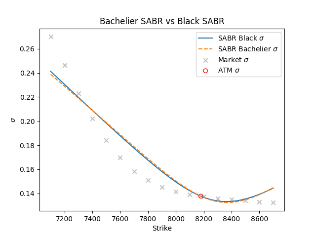
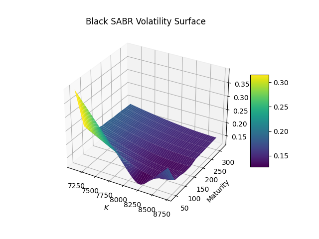
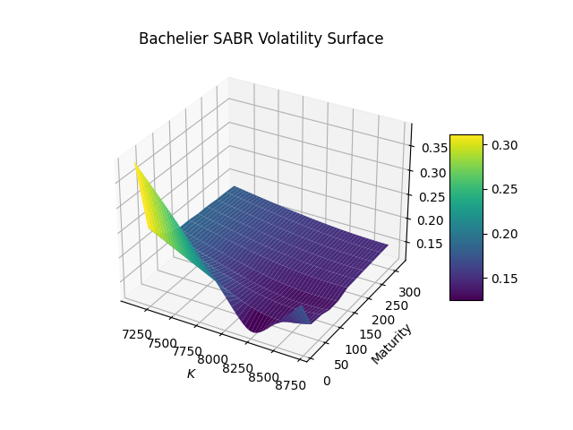

SABR随机波动率模型：市场隐含波动率微笑#
概述#
随着金融市场的发展，传统的BSM模型对于刻画金融资产价格变动过程变得不够精确，难以解释金融市场中的复杂现象。通过反算场内期权市场价格的隐含波动率，不难发现隐含波动率并不是一个常数值，与BSM模型的假设相悖。市场上观察到的隐含波动率曲线通常会呈现“微笑”形状，即隐含波动率随着行权价格的变动进行非线性变动。在这种情况下，关于波动率模型通常有两类改进方法：一类是局部波动率模型，即对隐含波动率直接进行建模，假设资产的波动率是资产价格和剩余期限的确定函数; 另一类是随机波动率模型，即通过一条随机过程描述波动率的变化。
在实践中发现，Dupire（1994）局部波动率模型难以达到预期的效果。核心问题在于当标的资产价格上涨或下跌时，理论上波动率微笑曲线应分别向右或向左整体移动，然而局部波动率模型却呈相反方向变动 (Hagan, 2002) 。因此，该类模型在动态对冲方面的实际表现甚至不如BSM模型。本文将阐述基于SABR (Stochastic, \(\alpha\), \(\beta\), \(\rho\))模型的波动率拟合方法，包括直接拟合参数方法，以及通过平值（at-the-money）波动率确定Alpha的间接拟合方法（下文简称为Alpha间接调参法）。
模型回顾：CEV模型#
随着外汇市场的发展，以及随机波动模型的推广，一个更为广义的BS模型开始推广流行，该模型为CEV（Constant Elasticity of Variance Model）模型，又被称为固定方差模型，试图捕捉随机波动率及其杠杆效应，由Cox（1975）提出。CEV模型描述的是资产价格 \(S_t\) 和其波动率 \( \sigma \) 之间的关系：
其中， \(\alpha\) 是弹性系数，它决定了波动率如何随着资产价格的变动而变化。当 \(\alpha = 1 \) 时，该模型即为最常见的几何布朗运动模型。CEV模型可以描述波动率与资产价格的关系，但它不考虑波动率本身的随机性。CEV动态过程通常被用于Libor市场模型中的skew建模（Andersen and Andreasen, 2000）。
SABR模型#
SABR（Stochastic, \(\alpha\), \(\beta\), \(\rho\)）模型是一个在金融工程中广泛使用的随机波动率模型，可以用来捕捉市场中的隐含波动率微笑。SABR模型在上述CEV模型的基础上加入了波动率的随机性，将资产的远期价格 \(F_t\) 以及波动率 \(\alpha\) 作为单独的随机过程，\(\beta\) 在SABR模型中扮演与CEV模型中 \(\alpha\) 类似的角色，两组随机过程与相关性 \(\rho\) 相关：
其中，
\(\hat{F}\) 为挂钩标的远期价格 （变量），其中 \(f\)挂钩标的当前远期价格 （常数）
\(\hat{\alpha} \in (0, +\infty)\)，为SABR波动率 （变量）， 其中\(\alpha\)当前SABR波动率 （常数）
\(\beta \in [0, 1]\)， 为SABR模型中的CEV指数，生成资产价格的分布，从正态（\(\beta = 0\)）到对数正态（\(\beta = 1\)）分布。
\(v \in (0, +\infty)\)， 为波动率的波动 （volatility of volatility）
\(W_{1,t}\) 和 \( W_{2,t}\) 是两组Wiener过程，它们之间的相关性为\(\rho\)。
从形式上看，当在CEV模型中引入波动率 \(\sigma\) 的随机动态，即可推出SABR模型。简而言之，SABR是CEV模型的一种扩展形式，它不仅描述了资产价格的随机动态，还描述了波动率的随机动态。虽然CEV模型能够描述波动率与资产价格之间的某种确定性关系，但是在实际市场中，波动率本身通常为随机性。而SABR模型可以看作是CEV模型的自然衍生，通过增加波动率的随机性捕捉更多的市场现象。
SABR模型计算方法#
SABR模型本质上为波动率微笑模型，该模型天然无套利，不需要像其他随机波动率模型（如SVI模型，插入上一篇文章链接）一样新增额外的约束条件。值得注意的是，自2014年欧洲央行宣布负利率以来，负利率在国际市场上颇为流行，以下讨论的SABR模型通过相应调整也支持负利率的计算。
Black SABR#
在实际运用中通常假设标的资产遵循几何布朗运动。因此，假设\(\beta = 1.0\)。根据Hagan (2002)，\(\beta\) 为1时，Black SABR模型隐含波动率公式可简化为：
其中，F为当前远期价格，K为期权行权价。
Bachelier(Normal) SABR#
Hagan (2002)也提出了基于正态分布SABR模型的隐含波动率计算方法，若要使用Bachelier SABR模型，将\(\beta\)设置为0，简化为：
SABR模型校正#
通过Black76模型计算出2023年7月26日聚乙烯期权的隐含波动率，作为市场波动率观测值输入值SABR模型拟合波动率曲面中，进行非线性最小二乘校准参数并寻找全局最有解。在模型校正实践中，不难发现，参数校准值在一定程度上也依赖于初始值的设定，假设的波动率初始值由当前市场波动率的Cubic Spline插值产生。
直接拟合参数方法#
根据2.1节，固定 \(\beta = 1.0\)，直接对\(\alpha\) ，\(\rho\)，\(v\) 进行拟合，最小化市场波动率与SABR模型计算的隐含波动率之间的平方误差。
Alpha间接调参法#
根据2.1节，固定 \(\beta = 1.0\)，直接对\(\rho\)，\(v\) 进行拟合。\(\alpha\) 参数则是通过市场平价(ATM)波动率进行校准，假设ATM平价波动率为 \(\sigma_{atm}\), West (2005a)表明 \(\alpha\)为三次方程的平方根。
Black SABR关于 \(\alpha\)的三次方程如下：
Normal SABR关于 \(\alpha\)的三次方程如下：
拟合方法结果比较: 以Black SABR为例#

实证分析#
以Alpha间接调参法为基准，Bachelier SABR以及Black SABR的波动率拟合结果如下：
2D波动率曲线：挂钩标的l309#

3D波动率曲面#


参考文献#
[1] Andersen, L. and Andreasen, J. (2002): “Volatile Volatilities,” Risk, 15, 163-168.
[2] Cox, J. (1975): “Notes on Option Pricing I: Constant Elasticity ofVariance Diffusions,” Working Paper, Stanford University.
[3] Dupire, B. (1994): “Pricing with a Smile,” Risk Magazine, 7(1).
[2] Hagan, P. S., D. Kumar, A. S. Lesniewski, and D. E. Woodward (2002): “Managing Smile Risk,” Wilmott Magazine, September, 1(1).
[2] West, G. (2005a): “Calibration of the SABR Model in illiquid Markets,” Applied Mathematical Finance, 12(4), 371-385.